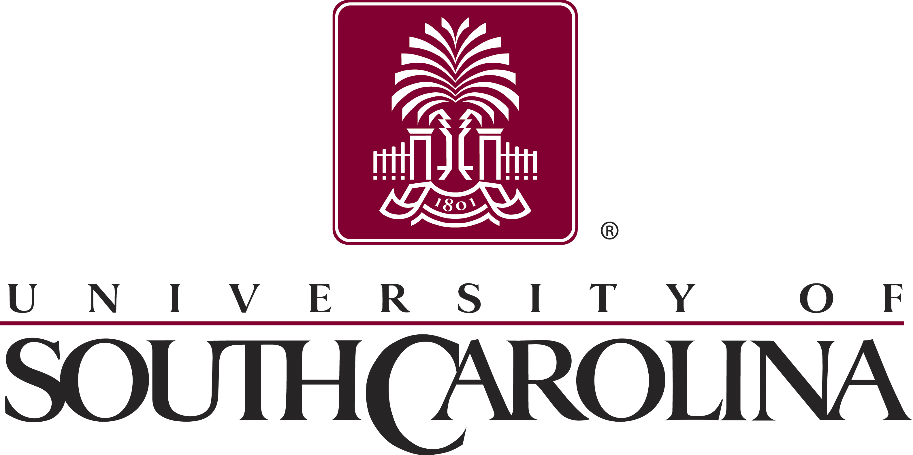
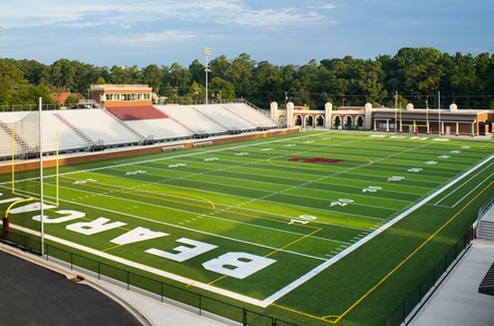

Education
Graduate School
I am graduating in May of 2016 from the University of South Carolina’s Counselor Education program with my Ed.S. At this time, I will be a licensed school counselor in South Carolina, and I will have my CDF. I have already passed my PRAXIS exam with a score of 171. I am also a member of the counseling honors society, CSI, and through this organization I will be presenting at the American Counseling Association conference in March in Montreal, Canada.
Undergraduate School

For my undergraduate degree, I also attended the University of South Carolina where I fell in love with the counseling program. I graduated in May of 2014 with a B.A. in Experimental Psychology and a minor in Counselor Education. I was part of The National Collegiate Scholars, and I also took an active part in the campus' Sustainable Carolina Club and lived in the Green Learning Community.
High School
I attended Brookland Cayce High School. While at BC, I was elected student body president and was a member of many clubs that served the community. I graduated high school early and immediately enrolled at the University of South Carolina.